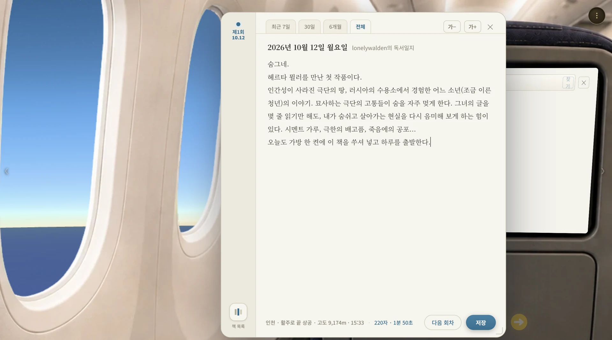
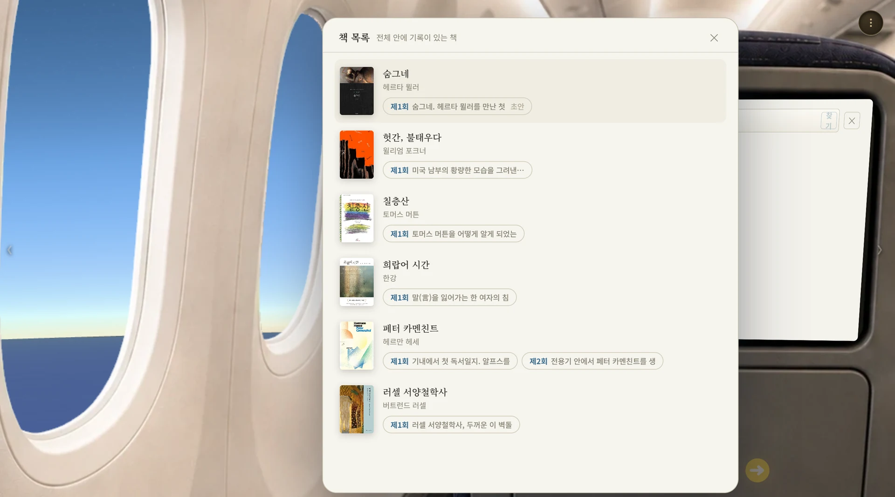
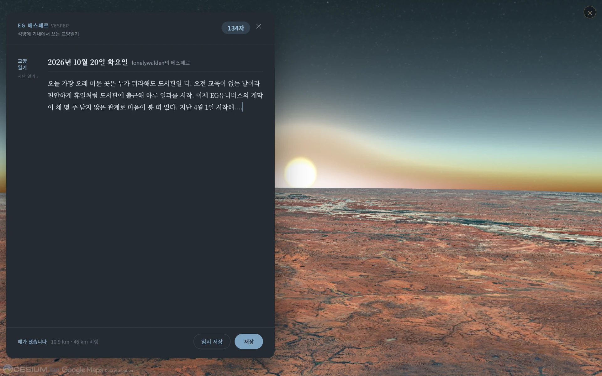

EG유니버스는 실제 지구 위에 서 있어 어디든 날아서 갑니다. 비행기 창가에서 손에 든 책을 읽고, 해 지는 도시를 따라 날며 하루를 적고, 다녀온 곳마다 순례자의 수첩처럼 도장이 하나씩 쌓입니다.
독서비행 · 베스페르 · 크레덴시알 · 다른 도시
스무 살이 되도록 섬을 떠나 본 적 없던 청년이 있었습니다. 오디세우스의 아들 텔레마코스입니다. 어느 날 아버지의 옛 친구 멘토르가 찾아와 그를 배에 태웠습니다. 멘토르는 무엇을 하라고 가르치지 않았습니다. 어느 집 문을 두드릴지만 알려 주고, 나머지는 보게 두었습니다. 큰 사람들의 식탁에 손님으로 앉아 그들이 어떻게 말하고 어떻게 손님을 맞고 어떻게 슬픔을 이야기하는지 보고 돌아온 텔레마코스는, 떠날 때와 다른 사람이 되어 있었습니다.
2,000년 넘게 지나 유럽의 귀족들도 같은 방법을 썼습니다. 아들이 열여덟 무렵이 되면 선생 한 사람을 붙여 파리로, 피렌체로, 로마로 보냈습니다. 책을 읽히지 않고, 시험을 치르지 않고, 세상을 보여 주었습니다. 그랑 투르라 불린 그 여행이 EG유니버스가 사람을 대하는 방식입니다. 가르치지 않고 보여 줍니다.
그래서 EG유니버스에 들어서면 처음 만나는 것이 비행기입니다. 위성이 찍어 둔 실제 지구를 빌려 쓰고 그 위에 집을 세웠기 때문에, 파리의 지붕도 맨해튼의 옥상 물탱크도 실제 그대로이고, 어디를 가든 날아서 갑니다. 그 첫 비행이 말없이 알려 줍니다. 당신은 지금 지구 위에 있다고.
독서비행
책을 펴고 오래 잠기는 좌석EG유니버스가 손님에게 가장 바라는 일은 책 한 권을 펴서 오래 잠기는 것입니다. 독서비행은 그 시간 동안 앉아 있을 좌석입니다. 화면에 책이 뜨지 않습니다. 손에 든 종이책을 무릎 위에 펴고, 화면은 창밖만 보여 줍니다. 읽다가 눈을 들면 산맥이나 강이 천천히 지나가고, 다시 책으로 돌아옵니다. 들여다보는 풍경이 아니라 곁에 두는 풍경입니다.
노선은 일곱입니다. 파리 저공 관광, 런던 저공비행, 맨해튼 곡예비행, 알프스 종단, 안데스 우편비행, 산티아고 순례 비행, 인천에서 파리까지 13시간을 가는 EG AIR 101편. 대부분은 100년 전의 노란 복엽기가 손님을 태웁니다. 산티아고 노선에서는 조종사가 EG유니버스 가이드북을 읽어 주며 순례길 800킬로미터를 따라가고, 인천-파리 노선은 실제 항로를 따라 실크로드를 거슬러 갑니다.
좌석 앞 작은 모니터에는 지금 읽는 책의 표지를 걸어 둡니다. 읽다가 적고 싶은 것이 생기면 언제든 「기록 쓰기」를 누릅니다.

지키는 것
- 재촉하지 않습니다. 남은 시간도, 목표 쪽수도, 「중도 이탈」 같은 말도 없습니다.
- 도착지가 없습니다. 대부분의 노선은 고리를 돌고, 책을 덮는 곳이 그날의 도착지입니다.
- 책은 손님이 들고 옵니다. 화면에 본문을 띄우지 않습니다. 무엇을 읽을지는 손님이 정합니다.
남는 것
그 책에 관해 그날 쓴 글 한 편. 글에는 그때 창밖이 어디였는지가 함께 붙고, 같은 책을 여러 번에 나누어 읽으면 제1회, 제2회로 쌓입니다. 그 책은 내 집 2층 책의 방에 서고, 수첩에는 그날 읽은 책 이름이 새겨진 도장이 찍힙니다.

베스페르
해 지는 곳을 따라 나는 저녁 비행기하루가 끝나고 무언가 적고 싶은 저녁에 타는 비행기가 하나 더 있습니다. 이름은 베스페르, 저녁별이라는 뜻입니다. 이 비행기에는 목적지가 없습니다. 지금 이 순간 지구에서 해가 지고 있는 곳으로 날아갑니다. 지구 어딘가는 언제나 해 질 녘이라, 언제 타도 창밖은 노을입니다. 그 창가에 30분 앉아 오늘을 적습니다.
EG유니버스에서 쓰는 글은 대개 그림을 보고, 책을 읽고, 별을 만난 뒤의 글입니다. 베스페르의 글만 대상이 없습니다. 그래서 이 글의 대상은 쓰는 사람 자신입니다. 독서비행이 책을 통해 세상을 본다면, 베스페르는 저녁 창가에서 자기를 봅니다.
쓰려고 앉으면 첫 줄이 가장 무겁습니다. 영화 「파인딩 포레스터」에서 숨어 지내던 노작가는 글이 막힌 소년 앞에 자기가 예전에 쓴 글 한 편을 내밀고, 그 첫 문단을 그대로 타자로 치게 합니다. 치다 보면 어느 순간 자기 말이 올라오고, 그때부터는 자기 글을 이어 치라고요. 생각을 다 끝내고 쓰는 것이 아니라, 쓰기 시작해야 생각이 따라온다는 것입니다.
베스페르의 일기장도 빈 종이로 열리지 않습니다. 첫 문장이 하나 놓여 있습니다. 「오늘 가장 오래 머문 곳은」, 「아무에게도 말하지 않은 것이 하나 있는데」. 커서는 그 문장 끝에서 깜빡이고, 곁에 흐린 글씨로 「이어서 써 보세요…」가 붙어 있습니다. 마음에 안 들면 지우거나 고쳐 써도 됩니다. 한 글자라도 손대는 순간 흐린 글씨는 사라지고, 그 문장은 내 일기의 첫 줄이 됩니다. 시동을 걸어 주는 데까지가 그 문장의 일입니다.

지키는 것
- 아무에게도 보이지 않습니다. 이 일기는 쓴 사람만 읽습니다.
- 첫 문장은 시동일 뿐입니다. 지워도, 고쳐도, 그대로 이어 써도 됩니다.
- 시간표가 없습니다. 해는 언제나 어딘가에서 지고 있어, 아무 때나 타면 됩니다.
남는 것
교양일기 한 편이 그날 해가 지던 도시의 이름을 달고 남습니다. 리스본에서 해 지는 것을 보며 쓴 날은 리스본이, 다음 날 마우나케아에서 쓴 날은 마우나케아가 적힙니다.
크레덴시알
도장을 받는 순례자의 수첩산티아고 순례길을 걷는 사람은 크레덴시알이라는 수첩을 지니고 갑니다. 알베르게와 성당에 들를 때마다 그 수첩을 내밀고 도장을 받습니다. EG유니버스의 손님도 같은 수첩을 하나 지닙니다. 미술관, 음악관, 천문대, 야구장, 학술원에 들어가면 화면 구석에 도장이 하나 놓이고, 누르면 찍힙니다.
도장의 테두리는 그곳의 얼굴이고, 가운데에는 그날의 것이 새겨집니다. 오르세의 도장에는 그날 걸린 그림 이름이, 빈의 도장에는 그날의 곡 이름이, 마우나케아의 도장에는 그날 처음 만난 사람의 이름이 들어갑니다.
지키는 것
- 도장은 손님이 누릅니다. 저절로 찍히면 방문 기록이고, 내밀어야 찍히면 순례입니다. 안 눌러도 아무 손해가 없습니다.
- 빈칸을 미리 그려 두지 않습니다. 「40곳 중 12곳」 같은 숫자가 어디에도 없습니다. 아직 안 채운 칸이 아니라 아직 안 간 곳입니다.
- 얼마나 자주 왔는지는 찍지 않습니다. 7일 연속, 30일 개근 같은 도장이 없습니다.
남는 것
수첩은 늘 보이는 곳에 있지 않고 배낭 안에 있습니다. 한 달이 지나 펼치면 어디를 다녀왔는지가, 한 해가 지나면 이 우주에서 지나온 길이 도장으로 남아 있습니다. 아무도 그 수첩을 세지 않고, 누구와도 견주지 않습니다.
다른 도시
지금 있는 도시에서 다른 도시로타륜의 「다른 도시」를 누르면 지금 서 있는 도시를 떠나 다른 도시 상공으로 날아갑니다. 파리에서 런던으로, 런던에서 뉴욕으로. 지금 EG유니버스에서 사람이 사는 도시는 이 셋이고, 입주자가 늘면 도시도 늘어납니다. 미술관과 음악관과 천문대는 마드리드에도, 시드니에도, 나미브 사구에도 서 있어 그날 문을 연 곳으로 찾아갑니다.
앞의 셋이 가는 동안의 여행이라면 이것은 가서 머무는 여행입니다. 그 도시들에 무엇이 서 있는지는 Places에서 이어집니다.
지키는 것
- 바쁜 날에는 지구를 거치지 않아도 됩니다. 지구는 목적지이지 통로가 아니라서, 어느 건물이든 타륜의 한 줄로 곧장 들어갑니다.
들어가서 보는 것은 손님의 일이고, 스미는 것은 시간의 일입니다. EG유니버스는 창밖을 맡습니다.
일곱 가지